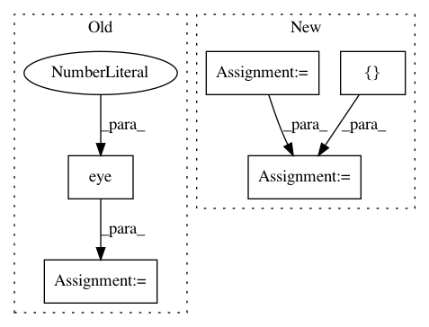

3b7c9ec865c02888620cdf215e61c616e1dcc7a2,linearmodels/tests/iv/test_model.py,,data,#,19
Before Change
r[-1, 2:] = 0
r[2:, -1] = 0
r[-1, -1] = 0.5
r += np.eye(9) * 0.5
v = np.random.multivariate_normal(np.zeros(r.shape[0]), r, n)
x = v[:, :k]
z = v[:, k : k + p]
e = v[:, [-1]]
After Change
clusters = rs.randint(0, 10, n)
rho = 0.5
r = scipy.linalg.toeplitz([1] + (rho + np.linspace(0.1, -0.1, 8)).tolist())
r[-1, 2:] = 0
r[2:, -1] = 0
r[-1, -1] = 1
v = rs.multivariate_normal(np.zeros(r.shape[0]), r, n)
x = v[:, :k]
z = v[:, k : k + p]
e = v[:, [-1]]
params = np.arange(1, k + 1) / k
params = params[:, None]
y = x @ params + e
exog_instr = np.column_stack((x[:, q:], z))
xhat = exog_instr @ np.linalg.pinv(exog_instr) @ x
nobs, nvar = x.shape
s2 = e.T @ e / nobs
s2_debiased = e.T @ e / (nobs - nvar)
In pattern: SUPERPATTERN
Frequency: 3
Non-data size: 5
Instances
Project Name: bashtage/linearmodels
Commit Name: 3b7c9ec865c02888620cdf215e61c616e1dcc7a2
Time: 2021-01-06
Author: kevin.k.sheppard@gmail.com
File Name: linearmodels/tests/iv/test_model.py
Class Name:
Method Name: data
Project Name: biolab/orange3
Commit Name: 7fee1dae63fabcfa6c90cc1deecdd337083c7692
Time: 2015-01-30
Author: anze.staric@gmail.com
File Name: Orange/classification/softmax_regression.py
Class Name:
Method Name:
Project Name: nipy/dipy
Commit Name: 39ddc5f5d2cb75be64204438d60dd3a45d4c300f
Time: 2013-12-21
Author: garyfallidis@gmail.com
File Name: dipy/sims/voxel.py
Class Name:
Method Name: multi_tensor_pdf